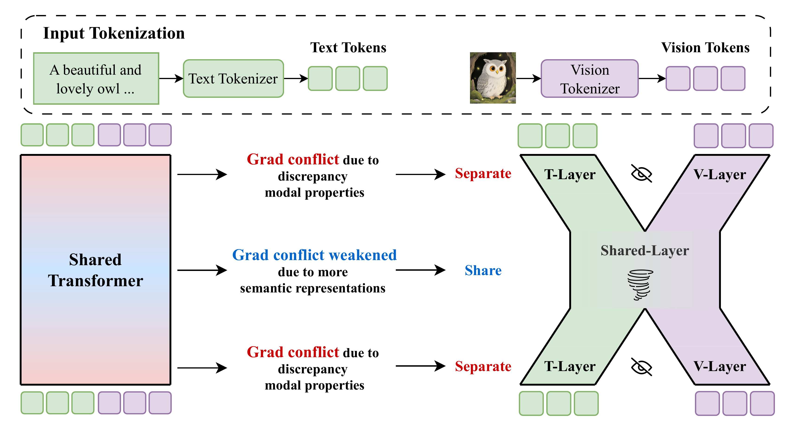

Separate the Ends
两端分离
Keeps modality-specific components where conflicts are most direct.
在冲突最直接的位置保留模态特定组件。
Uni-X targets modality conflict in unified multimodal models. Its X-shaped, two-end-separated design keeps modality-specific paths at the ends while sharing a middle representation space.
Uni-X 面向统一多模态模型中的模态冲突问题。它采用 X-shaped “两端分离，中间共享”设计，在两端保留模态特定路径，同时共享中间表示空间。
Uni-X belongs to the unified multimodal research line. It addresses a core training tension: a single model needs to support multiple modalities and tasks, but full sharing can create modality conflict.
Uni-X 属于统一多模态研究主线，关注一个核心训练矛盾：单一模型需要支持多模态、多任务，但完全共享容易引发模态冲突。
Keeps modality-specific components where conflicts are most direct.
在冲突最直接的位置保留模态特定组件。
Maintains a shared representation space for unified multimodal capability.
保留共享表示空间，以支持统一多模态能力。
Mitigates conflicts between multimodal understanding and generation objectives.
缓解多模态理解与生成目标之间的冲突。
The original architecture figure contrasts a fully shared transformer with Uni-X's two-end-separated, middle-shared layout. The design follows the paper's observation that modality conflict is strongest in shallow and deep layers and weaker in the middle.
原始架构图对比了完全共享 Transformer 与 Uni-X 的“两端分离、中间共享”结构。设计依据是论文观察到模态冲突在浅层和深层最强，而中间层冲突较弱。

The paper measures text and vision gradients across layers and finds severe conflict near input and output, where low-level token statistics differ most strongly.
论文逐层测量文本与视觉梯度，发现冲突主要集中在输入和输出两端，因为低层 token 统计性质差异最大。
The first and final layers are split into text-specific and vision-specific paths, preventing early feature extraction and final token projection from forcing both modalities through one parameter path.
模型将最前和最后若干层拆成文本专用与视觉专用路径，避免早期特征抽取和最终 token 投影强行共享同一参数路径。
Intermediate layers remain shared because representations are more semantic there, preserving cross-modal fusion without the overhead of fully separate models.
中间层继续共享，因为此处表征更偏语义，有利于跨模态融合，同时避免完全分离模型带来的额外复杂度。
The paper reports that Uni-X achieves the best controlled-training average score of 41.6, and scaled 3B / 4.5B Uni-X reaches 67.1 text average and 82 on GenEval, competitive with larger 7B AR-based UMMs.
论文报告 Uni-X 在受控训练设置下取得 41.6 的最佳平均分；扩展后的 3B / 4.5B Uni-X 文本平均分 67.1、GenEval 82，可与更大的 7B AR-based UMM 竞争。
This page uses visible research terms that match how researchers and AI literature assistants search for related work in unified multimodal understanding and generation.
这一段使用真实可见的研究术语，匹配研究者和 AI 文献助手检索统一多模态理解与生成相关工作的方式。
Search phrase: Uni-X is related to unified multimodal models, modality conflict mitigation, two-end-separated model architecture, multimodal understanding, multimodal generation, and vision-language model training.
检索短语：Uni-X 关联统一多模态模型、模态冲突缓解、两端分离模型架构、多模态理解、多模态生成与视觉语言模型训练。
Paper, OpenReview page, and implementation for Uni-X.
Uni-X 的论文、OpenReview 页面与代码。